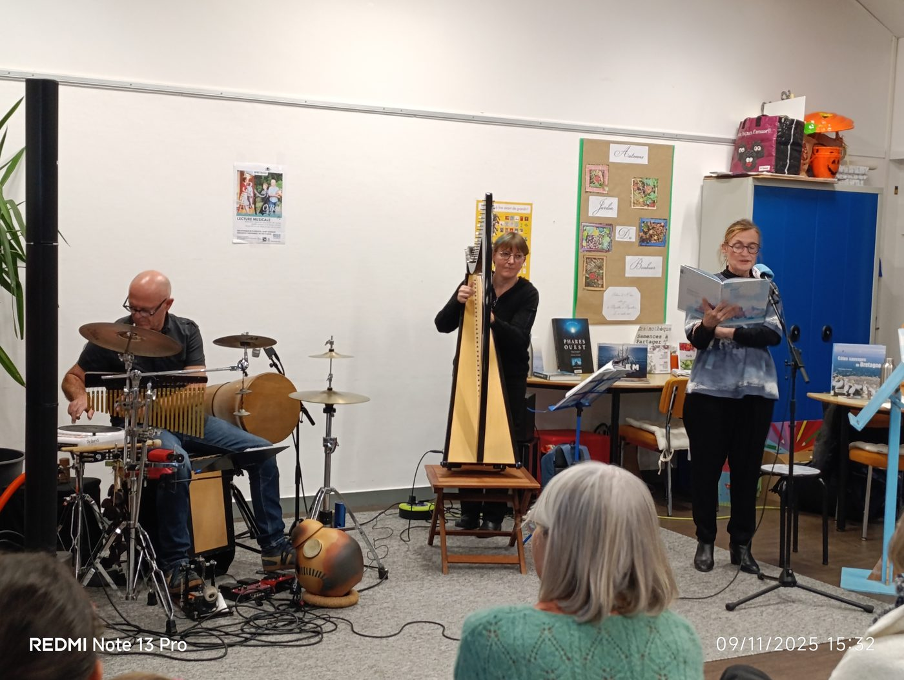

Notre répertoire
L'ambiance musicale que nous proposons laisse une grande place à nos instruments acoustiques et à la voix. Viennent s'y mêler quelques nouveaux sons en superposition qui permettent de mettre en fusion tradition et composition.
Nous jouons un répertoire de musique à danser en fest-noz et bal folk avec un Kas-ha-barh local, un Andro à la p'tite semaine, un Loudéac à l'heure et d'autres airs pour pieds en suspension plus originaux comme un rondeau ou une polaïe …
Certains textes de chansons sont les paroles traditionnelles mais d’autres airs sont des adaptations originales !
Vous pouvez écouter quelques airs ici : https://soundcloud.com/obalduo
Expériences musicales et projets !
Nous aimons jouer dans tous les lieux où l'on peut partager notre musique !
Nous jouons en intérieur et extérieur avec notre petite sono et nous apprécions d’échanger et de répondre aux questions sur nos instruments...
Fest-noz, fest-deiz et bals folk :
- Festourun au Run ar Puns à Chateaulin (mars 2026)
- Festig-noz du Moulin vert (juin 2026)
- Les Jeudis de l’Enclos à Pleyben (juillet 2026)
- Festig-noz Hanv à l’Ephémère - jardins de l’Evêché à Quimper (Août 2026)
- Fest-Deiz à Plonéis – novembre 2026
- Bal folk à Irvillac - janvier 2027
Concerts :
- Archipel à Fouesnant (Novembre 2025 – janvier 2027)
- Bar Chez Cathy à Penmarc’h (Juin et Août 2026)
- Moulin de Rossulien à Plomelin (juillet 2026)
- Chapelle Notre Dame de Kerinec à Poullan sur mer (Août 2026)
- Chapelle Notre Dame de Grâce à Pluguffan (septembre 2026)
Animations musicales de marchés :
- Penhors et Plovan (été 2025)
- Le clos du Trévannec à Pont l’Abbé (été 2025)
- Kerdévot à Ergué-Gabéric (juillet 2026)
- Gulvain (Noël 2025 et juillet 2026)
Autre expérience :
- Lecture musicale avec Gwenaëlle Abolivier dans le pays bigouden (Novembre 2025 et février 2026)
